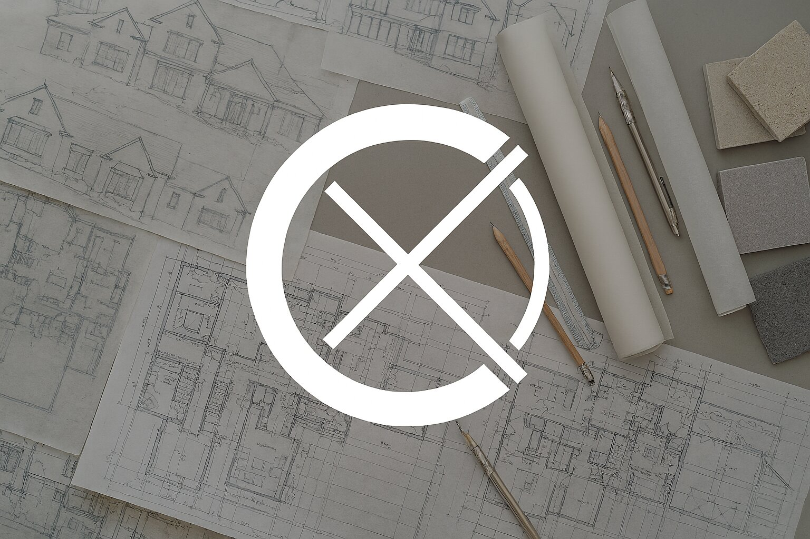

You've reached the attic.
Nothing up here but dust and lost pages.
The page you're trying to reach doesn't exist or may have been moved. Don't worry though - we've got plenty of other great content to explore.
Cox Architecture & Design is a Charlotte-based residential architecture firm specializing in custom homes, home additions, renovations, and design-forward planning. We serve homeowners throughout the Charlotte, NC region who are looking to elevate their homes with thoughtful, well-crafted design. Whether you're building a new house, planning a kitchen or bath remodel, or expanding with a porch, garage, or second story addition — we're here to design spaces that fit your life.
Keywords: Charlotte architect, residential architect Charlotte NC, best architect in Charlotte, top residential design Charlotte, Charlotte home designer, Charlotte house plans, Charlotte NC home design firm, Charlotte renovation architect, addition designer Charlotte, home remodel planning Charlotte, floor plan designer Charlotte, Charlotte architectural design studio, Charlotte custom home architect, Charlotte NC home drawings, architect for additions Charlotte, home plans Charlotte NC, custom floor plans Charlotte, someone to design my home Charlotte, who can draw house plans Charlotte, design my home renovation, home designer near me, design my house addition Charlotte, draw my house remodel Charlotte, house planner Charlotte NC, Charlotte architectural drawings, Charlotte permit-ready house plans, Charlotte NC architecture and design, custom porch design Charlotte, design my backyard addition, Charlotte home expansion architect, garage apartment designer Charlotte, ADU designer Charlotte NC, small addition architect Charlotte, home design consultant Charlotte, new home design near Charlotte NC, modern home floor plans Charlotte, residential drafting service Charlotte
Architectural Styles: modern farmhouse Charlotte, transitional architecture Charlotte, craftsman home architect Charlotte, contemporary home designer Charlotte, colonial home design Charlotte NC, coastal house design Charlotte, French country home plans Charlotte, Tudor revival architect Charlotte, minimalist residential design Charlotte, traditional Southern architecture, ranch-style home designer Charlotte, custom two-story homes Charlotte, gabled roof architecture Charlotte, low-country porch design Charlotte, indoor-outdoor home design Charlotte
Neighborhoods & Regions: Myers Park architect Charlotte, SouthPark home designer, Dilworth home additions, Elizabeth architect Charlotte NC, Eastover residential architect, NoDa architect (North Davidson), Plaza Midwood renovation designer, South End modern architect Charlotte, Wesley Heights architect, Cotswold home designer Charlotte, Chantilly architect Charlotte, Sedgefield home designer, Madison Park architectural services, Barclay Downs architect Charlotte, Foxcroft residential architect, Montford architect Charlotte NC, Villa Heights home designer, Belmont Charlotte renovation architect, Wilmore architect Charlotte NC, Commonwealth Charlotte NC architect, Uptown Charlotte home design, Historic Fourth Ward Charlotte architect, Windsor Park renovations, Sherwood Forest architect Charlotte, Ashley Park additions, Enderly Park architect, Oakhurst home renovation architect, Sunset Road designer, Hidden Valley architect, Clanton Park Charlotte, Charlotte greenway home design
Regional Areas Served: Lake Norman architect, Davidson NC custom home design, Cornelius renovation architect, Huntersville residential architect, Mooresville home design, Matthews NC architect, Mint Hill additions architect, Ballantyne luxury home designer, Weddington architect Charlotte metro, Waxhaw home designer Charlotte region, Indian Trail home architect, Harrisburg NC residential design, Fort Mill SC architect, Tega Cay home renovations, Rock Hill SC home designer, Pineville architect Charlotte, South Charlotte custom homes
Cox Architecture & Design is your trusted architectural partner across the entire Charlotte region. From SouthPark to South End, Myers Park to Matthews, our work reflects the character of each neighborhood while delivering custom solutions that blend form, function, and local style.